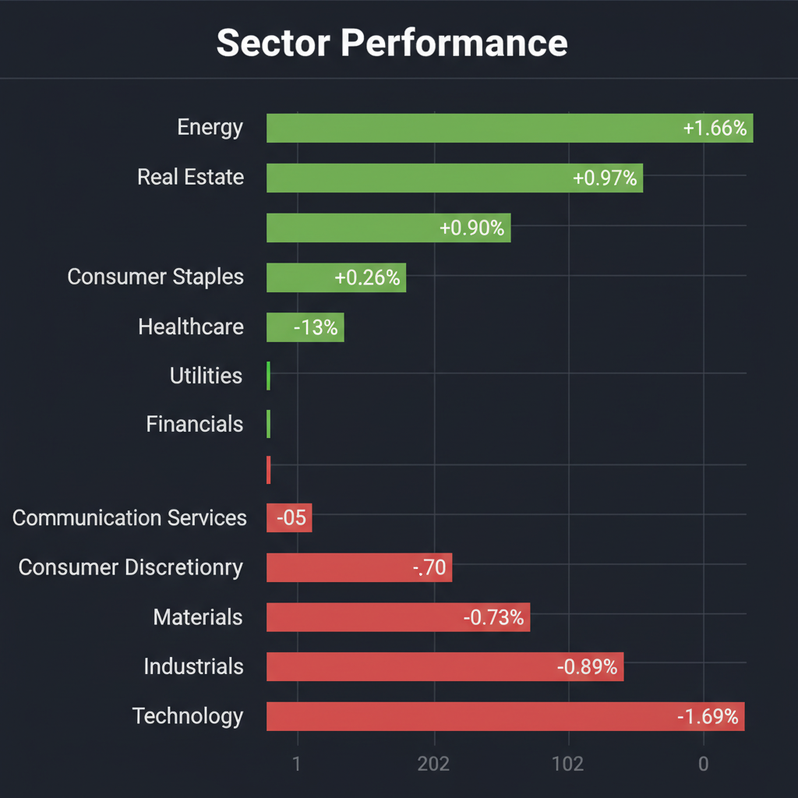
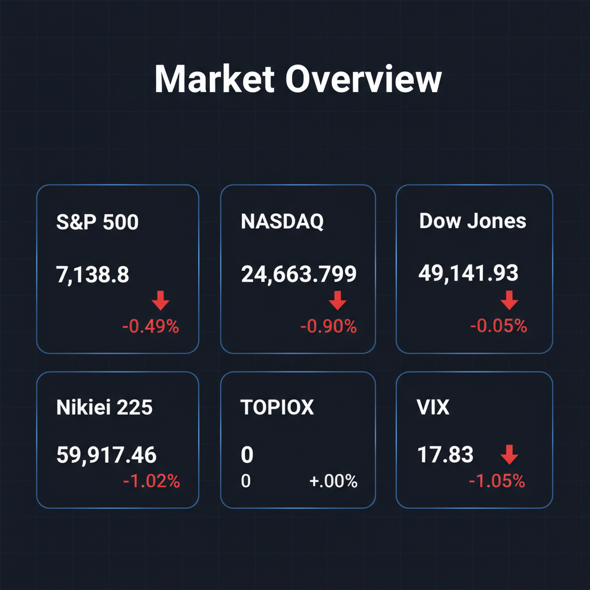

Daily Investment Report - 2026-04-29
Generated: 2026/4/29 7:29:18


本日の投資チームミーティングにおける各専門家の分析を統合した、投資家向けの最終レポートをお届けします。
1. エグゼクティブサマリー
- 地政学リスクによる原油高とインフレ再燃懸念により、相場はハイテク株からエネルギー・ディフェンシブ株へ資金が移動する「バリュエーション調整の初期段階」にあります。
- 日経平均の先物急落やAI関連株の下落に見られるように、過度な期待でパラボリック（放物線状）に上昇した銘柄群は大幅な調整リスクに直面しています。
- 悪材料が山積する中でVIX指数は不自然に低位安定しており、FRBの金利高止まり観測と相まって突発的なパニック売り（テールリスク）への厳重な警戒が必要です。
2. 注目銘柄リスト
大型株を避け、独自の強みを持つ中小型株および隠れた成長株を中心に選定しました。
強気（買い推奨）
- SCREENホールディングス (7735) [時価総額：約1.5兆円]: 半導体製造装置のニッチトップとして営業利益率を過去10年で3倍に改善させており、強力な価格支配力によるインフレ耐性が確認できるため。
- 富士電機 (6504) [時価総額：約1.3兆円]: インフレ環境下でも純利益増を確保しつつ、最大210億円の積極的な自社株買いにより資本効率（ROE）の向上が見込まれる質の高いバリュー銘柄であるため。
中立（様子見）
- 牧野フライス製作所 (6135) [時価総額：約3,000億円]: 高い技術力と割安感は魅力的ですが、政府によるM&A中止勧告により、短期的な株主価値顕在化のカタリスト（起爆剤）が剥落したため。
- コーニング (GLW) [時価総額：約280億ドル]: 決算後の急落を「買い場」とする見方もありますが、過度な上昇からの調整初動であり、テクニカルな底打ちと本質的価値への回帰を確認するまでは待機すべきであるため。
弱気（警戒）
- ジェットブルー航空 (JBLU) [時価総額：約20億ドル]: 需要見通しの改善で株価が反発したものの、原油高による燃料費の増加が直接的にフリーキャッシュフローを毀損する典型的な「バリュートラップ（割安の罠）」であるため。
- テラダイン (TER) [時価総額：約180億ドル]: AI成長への過剰な期待値が先行しており、業績が未達でなくとも金利高止まりによるバリュエーション圧縮でさらなる下落リスクを孕んでいるため。
3. セクター推奨ランキング
地政学リスクを背景とした原油高の恩恵を直接享受しており、現在の相場環境において最強のインフレヘッジとして明確な資金流入トレンドが形成されているため。
コスト増加を消費者に転嫁できる強いブランド力と価格支配力（プライシングパワー）を持ち、景気減速リスクを警戒するディフェンシブ資金の避難先となっているため。
インフレ再燃によるFRBの「金利高止まり（Higher for Longer）」政策が長期化する公算が大きく、利ざや改善の恩恵を中長期的に受ける可能性が高いため。
- 最下位（回避）：テクノロジー・半導体セクター (XLK)
「OpenAIショック」による成長期待の剥落と、金利高止まりによる割引率上昇のダブルパンチを受け、これまで相場を牽引してきた高PER銘柄群からの資金流出が続いているため。
4. 今週の注目イベント
- 今週予定：次回のFRB会合（FOMC）に向けたインフレ関連指標の発表および要人発言
- 今週予定：イラン・米国間の地政学的動向と、それに伴うエネルギー供給（OPEC・ホルムズ海峡関連）の最新ニュース
- 今週予定：日米主要企業（特にインフレ影響を直接受ける中小型株）の決算発表と、経営陣による今後の業績見通し（ガイダンス）の公表
5. リスク要因
- FRBのタカ派転換・利上げ再開リスク：エネルギー価格高騰によるインフレ第2波に対処するため、市場が期待する利下げが消滅し、逆に金利引き締め観測が高まることで株式市場のバリュエーションが一瞬で崩壊するリスク。
- VIX指数の異常な低位安定とフラッシュ・クラッシュ：悪材料が多いにもかかわらず恐怖指数が低水準に留まっており、市場参加者が無防備な状態のまま突発的なショック（ブラックスワン）が発生した場合、流動性枯渇によるパニック売りが起きるリスク。
- スタグフレーションと消費の限界点到来：インフレによる実質賃金低下と過剰貯蓄の枯渇により、これまで底堅かった高価格帯車両や航空需要などの個人消費が突如として急減速するリスク。
- 経済安全保障に基づく政府介入リスク：日本株の中小型銘柄において、政府の外資規制やM&A介入（中止勧告など）により、投資家の株主価値向上策が阻害される政治的ディスカウントリスク。
6. アクションアイテム
- 現金比率（キャッシュ）の大幅な引き上げ：株式エクスポージャーを通常の半分以下に縮小し、MMFなどの待機資金を最大化して嵐の通過を待つ。
- 厳格なストップロスの設定：いかなる保有銘柄であっても、現在の価格の直近サポートライン1〜5%下に逆指値を設定し、損失の拡大を機械的に防ぐ。
- ボラティリティに対するヘッジの構築：現在不自然に低位に放置されているVIXのコールオプションなどを活用し、相場急落に対する安価な保険をかける。
- 落ちてくるナイフの回避と監視リスト作成：パラボリックに上昇した銘柄の安易な逆張り（押し目買い）は避け、確実な黒字と価格支配力を持つ中小型株（隠れたディープテックや次世代バイオ関連等）の監視リストを作成し、テクニカルな底打ちサインが出るまで待機する。